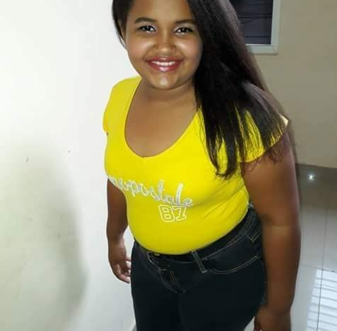

Mi Proyecto de vida Aracelis Severino

¿Quién soy?
Soy Aracelis Loreley Severino Hidalgo, nací en Puerto Plata
República Dominicana el 12 de Agosto del 2003, hija de Oscar
Severino y Carmen Hidalgo. Tengo 3 Herman@s cuyos nombres son Oscar
Gabriel Severino, Carmen Severino y Valentina Novoa.
¿Quién soy?
Me defino a sí misma como alguien que a pesar de los obstáculos no
permite que ellos la dobleguen. Me considero alguien que respeta a
cada persona como es o como quiere ser, soy apasionada, amigable,
flexible y persistente.
¿Quién soy?
Soy un ser que persigue y lucha por lo que quiere; Ser como soy es
un privilegio y amarme tal como soy es una virtud que aprecio.
¿Cuáles Cosas me hacen feliz?
Cosas que me hacen feliz
- Que me respeten.
- La sinceridad.
- Jugar beisbol.
- Estar en momentos familiares.
- Salir de campo.
- El olor al café.
- Observar a mi madre cuando sonríe.
- Saber que cuando despierto tengo un nuevo día.
¿Cuáles Cosas me hacen enojar?
Cosas que me hacen enojar
- La falta de respeto.
- Que hablen a mis espaldas.
- Que me comparen.
- Acusaciones sin saber.
- Los prejuicios.
- La desigualdad.
Me hace unica
-
La manera en que puedo sobrellevar las situaciones o problemas.
-
El trato y respeto que tengo con los demás sin importar
sexualidad, religión u otras diferencias.
-
Mi flexibilidad que me permite sin ningún problema integrarme en
cualquier ámbito social.
- Ser paciente y muy cooperativa.
- No me rindo.
-
Busco todas las alternativas o posibilidades que se pueden hallar
para resolver alguna cosa.
- Me pongo en los zapatos de la persona sin juzgar.
Test de Inteligencias Múltiples
Corto plazo
-
Aprender a Programar con estos lenguajes(Html, Css, Java, Php,
Angular).
- Culminar mis estudios secundarios.
-
Lograr tener mayor desenvolvimiento al hablar e interactuar con
las personas.
- Hacer el curso de inglés y servicio al cliente.
Mediano plazo
- Conseguir trabajo con mis conocimientos adquiridos.
- Entrar a la universidad.
- Estudiar Ingeniería en sistemas.
- Vivir sola.
- Depender de sí misma.
- Seguir estudiando cosas de mi interes.
Largo plazo
- Culminar la universidad.
- Formar mi propia empresa.
- Tener casa propia.
- Nunca dejar de seguir estudiando.
- Casarme.
- Tener hijos.
- Hacer casa a mis padres.
- Dejar una huella en la sociedad.
Cuando juzgas a otros, no los defines, te defines a ti mismo
Práctica ser el tipo de persona que te gustaría atraer
Wayne Dyer